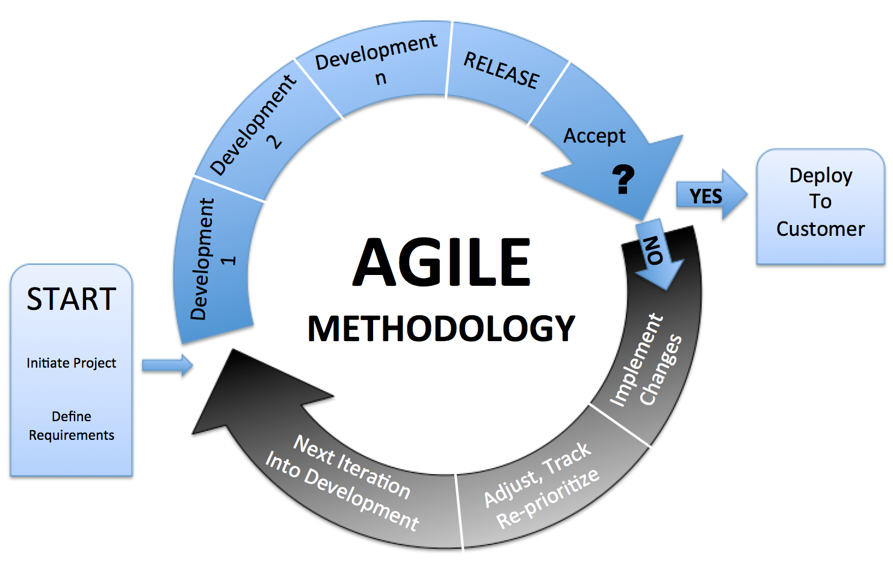

Agile Development

Apa itu "Agility"?
Kata Agile berarti bersifat cepat, ringan, bebas bergerak, waspada.
Efektif (cepat dan adaptif) dalam merespon perubahan
Komunikasi yang efektif kesemua stakeholders
Apa Prose Agile?
Dengan prinsip-prinsip tersebut Agile Process model berusaha untuk menyiasati 3 asumsi penting tentang proyek perangkat lunak pada umumnya :
- Kebutuhan software sulit diprediksi dari awal dan selalu akan berubah.Selain itu, prioritas customer juga sering berubah seiring berjalannya proyek.
- Desain dan pembangunan sering tumpang tindih. Sulit diperkirakan seberapa jauh desain yang diperlukan sebelum pembangunan.
- Analisis, desain, konstruksi, dan testing dapat diperkirakan seperti yang dinginkan.
Agile Methodology
